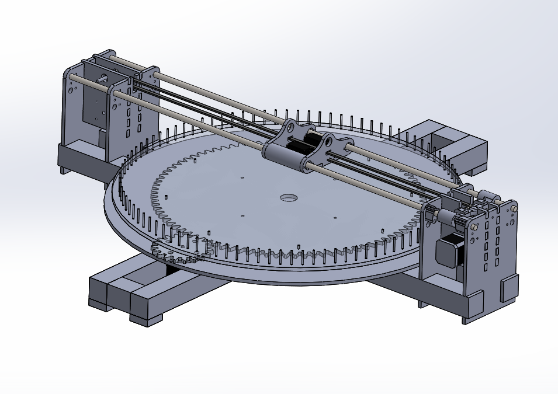
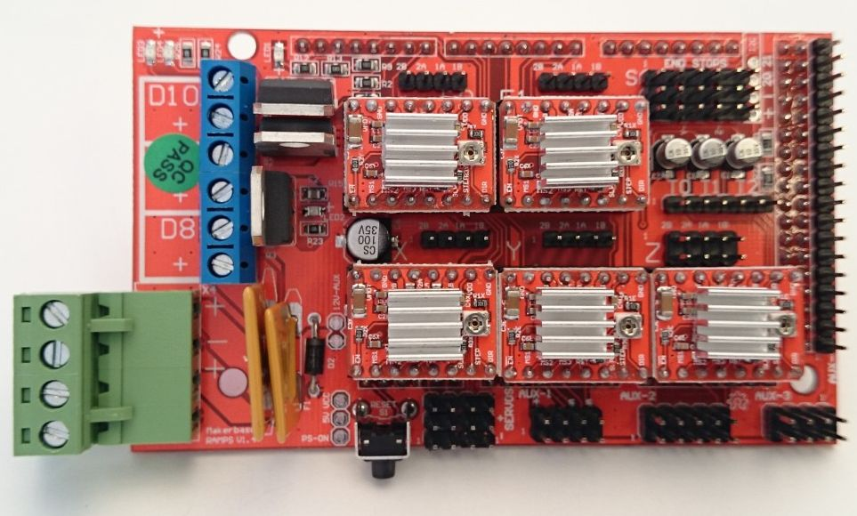
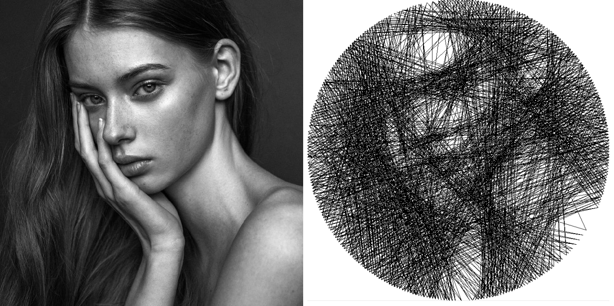
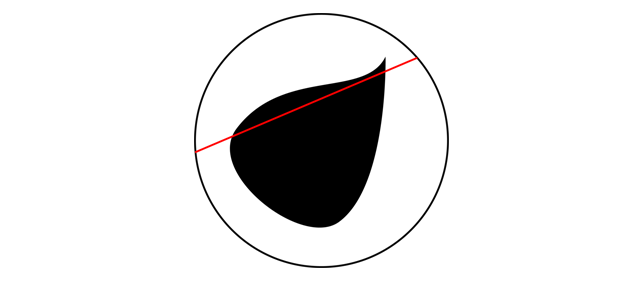
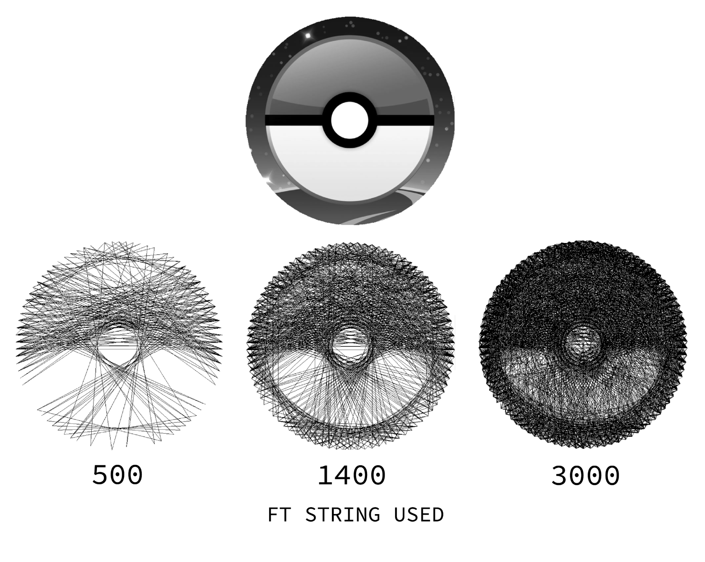

After pivoting away from the "lighter than air" jellyfish project at the end of the last sprint, Team Adryft leaps head-first into its brand new idea. The five members agreed to keep the team's original name "Adryft" and planned to somehow make it fit the string-art theme if they have time before POE ends...
So, this is what we got done these past two weeks! Boy has it been a sprint.
Hardware
We refined the CAD that was completed at the very end of last week. Besides removing the pegs in the middle of the disk (a decision we made to simplify the stringing process for our MVP), many of the adjustments were small tweaks to make the system fit together better.
We planned to have our machine powered by 2 stepper motors. One to move the string manipulator with a belt, and the other to turn a gear to rotate the circular board. We ran into some trouble getting the gears to fit together accurately. These were remedied with slight adjustments and reprints.
On the electrical side, we tested stepper motors with an Arduino Uno and Adafruit Motorshield but the board would over heat and the motors would jitter. We found that a RAMPS 1.4 Controller on an Arduino Mega2560 board worked much more smoothly.
The RAMPS 1.4 Controller Board:
Software
Within the Arduino control code of the system, we tested our motors with the AccelMotor library but later found that SpeedyStepper library, made by Stan suited our needs much better and had better documentation.
We also created a string art simulator in Pygame to test our image processing algorithm. The simulator processes a normal image into one drawn by criss-crossing straight lines. This is an example of one of our outputs:
Our image processing is a calculated with a greedy algorithm, which means that every line drawn by the string is the most optimal at that given time. It does not take into consideration what the end picture will look like. For each step, the algorithm draws the line across the board that covers the most "dark" values in the picture.
A problem we ran into was that the algorithm didn't know when to stop. It would keep drawing lines across the board until the virtual length of string ran out.
The image processing algorithm can be found on our Github.